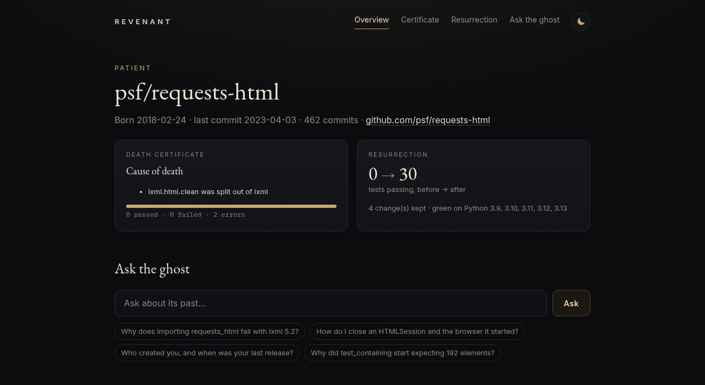
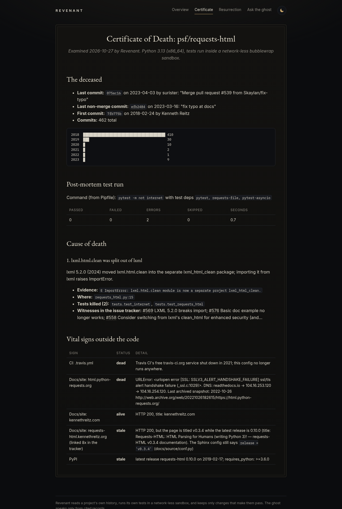
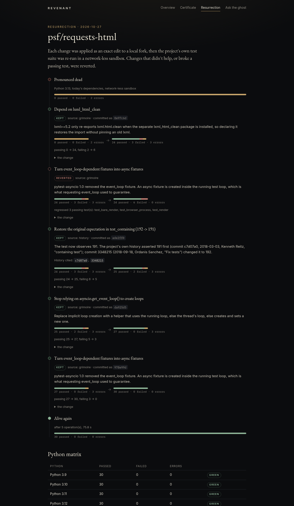
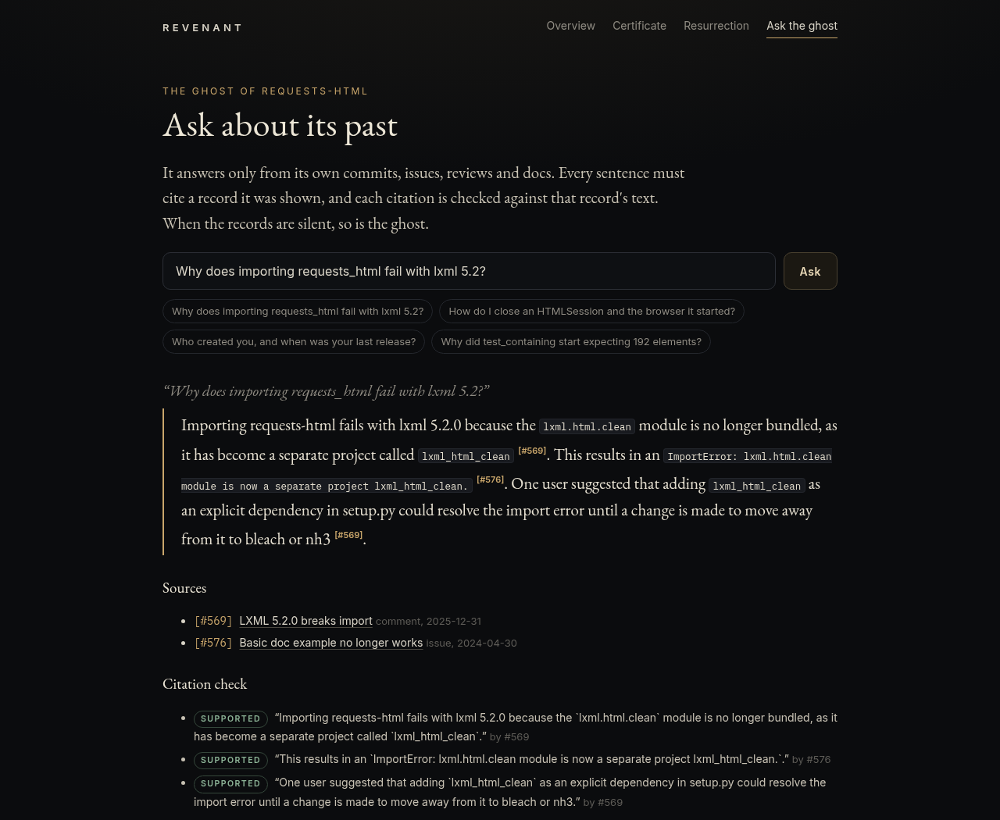
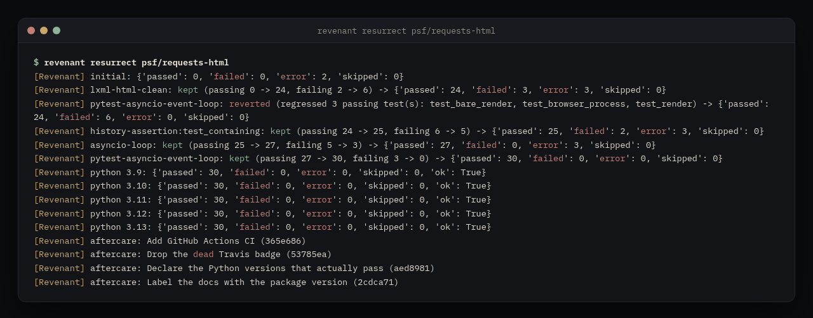
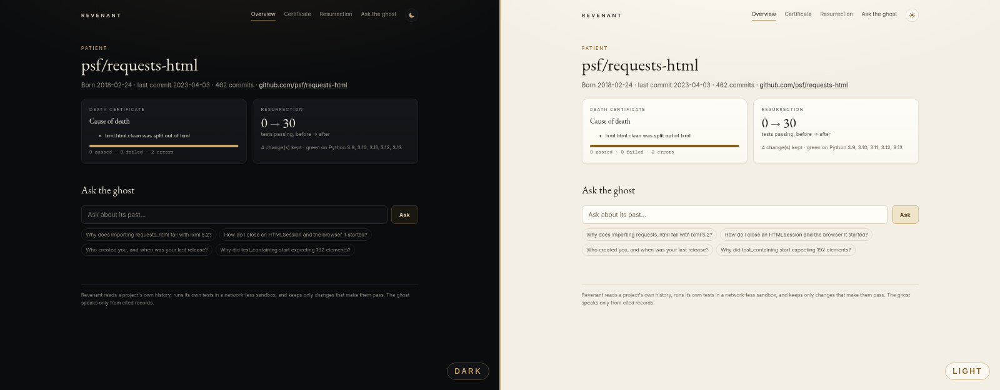

A séance for abandoned open-source software
Revenant
Every dead repository still has a voice. Revenant lets you talk to it, finds what killed it, and brings it back.
It reads a project's commits, issues, reviews and docs, answers questions with citations that are checked sentence by sentence, then repairs the code one small edit at a time, keeping an edit only if the project's own tests improve.

The three rites
Point Revenant at a repository on GitHub. It does three things, in order.
Build the ghost's memory
Clones the repo, harvests issues, PRs, comments and reviews from the GitHub API (cached, resumable when rate-limited), and indexes everything in SQLite with full-text search and local embeddings. Dead docs sites can be raised from the Wayback Machine.
Talk to the ghost
Hybrid retrieval, then an answer in first person from the project's own history. Every claim cites a record that was actually retrieved, and every cited sentence is checked against its sources. If nothing relevant exists, the ghost refuses instead of guessing.
Autopsy, then repair
Runs the project's tests in a network-less sandbox, writes a death certificate with the causes, then applies one verified edit at a time. A fix is kept only if tests improve and no passing test regresses.
It works on a real dead library
The first patient is psf/requests-html, last released in February 2019. On today's Python it does not even import.
Every number comes from a run saved in demo/. Revenant's own unit tests run offline on Python 3.11 to 3.13 in GitHub Actions.
Install and run
Revenant is a Python package with no web framework: the UI uses the standard library only.
Look around, no models needed
The exported requests-html patient is committed, so a fresh clone can serve the web UI straight away.
git clone https://github.com/Phantom9869/Revenant
cd Revenant
pip install -e .
REVENANT_HOME=deploy/bundle \
REVENANT_EMBED_MODEL=none \
revenant serve
# open http://127.0.0.1:8000Browsing needs only Python 3.11 or newer and git. Asking the ghost needs a model (see the full setup).
Run it on a repository
Needs Linux, git, uv, bwrap and Ollama.
ollama pull gemma4:e4b
ollama pull embeddinggemma
ollama pull qwen2.5-coder:7b
revenant summon psf/requests-html
revenant ask psf/requests-html "Why does import fail?"
revenant autopsy psf/requests-html
revenant resurrect psf/requests-htmlSet GITHUB_TOKEN to lift the API rate limit. Data goes to $REVENANT_HOME (default ./.revenant).
Screenshots
Taken with headless Chromium from the running web UI and the real outputs of the runs above.








